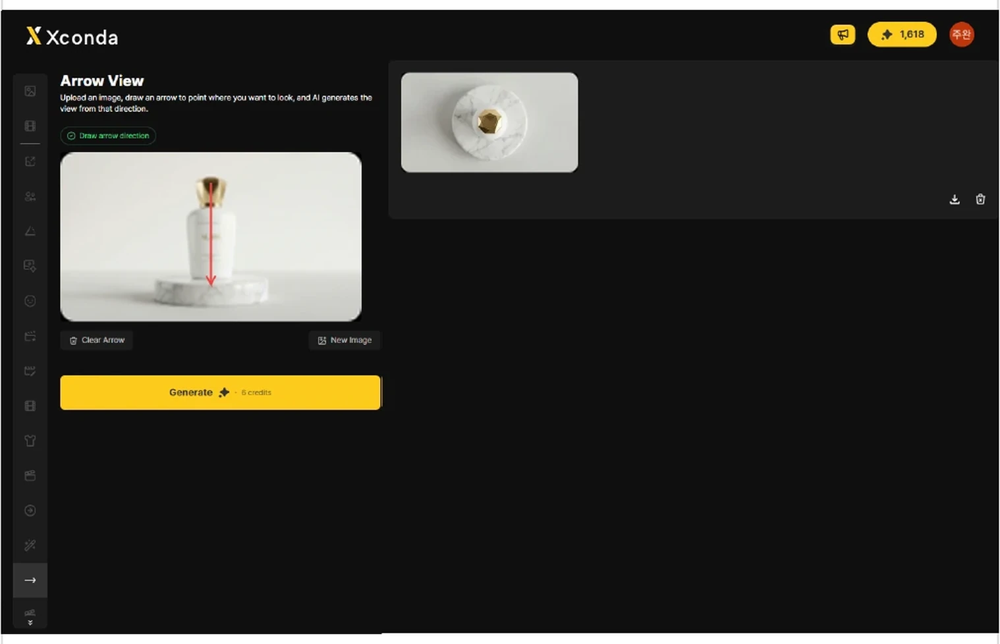
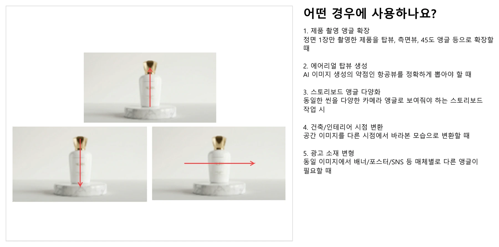
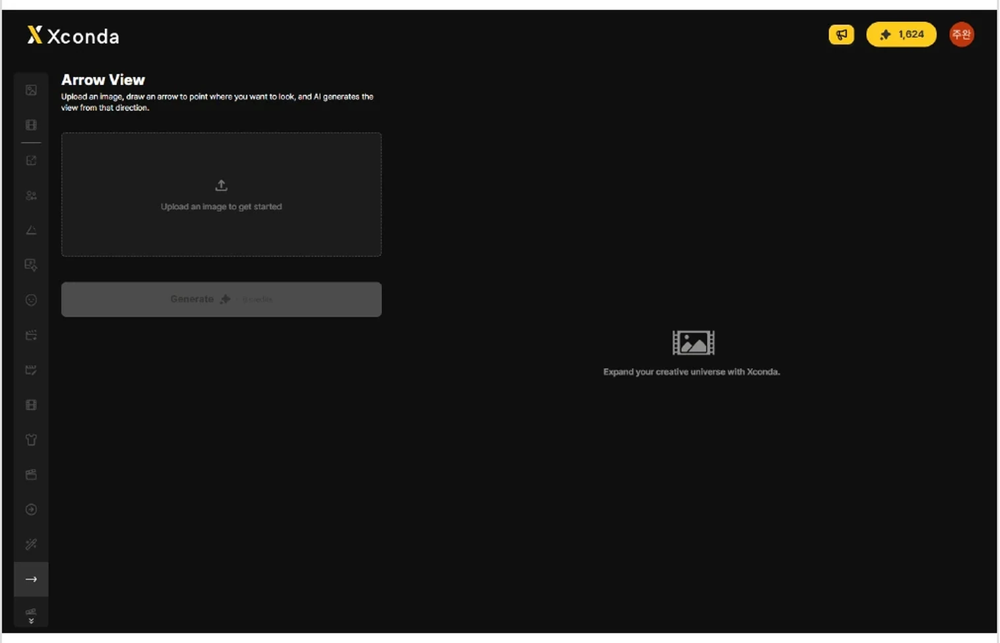
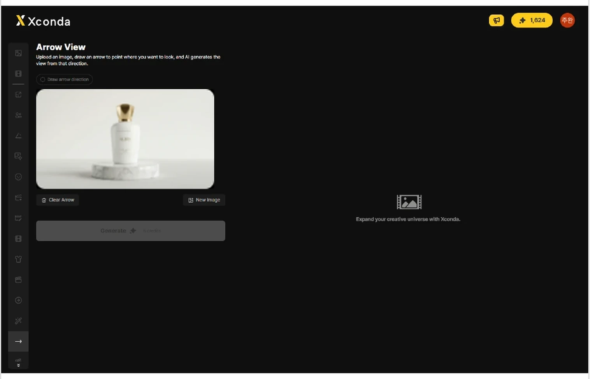
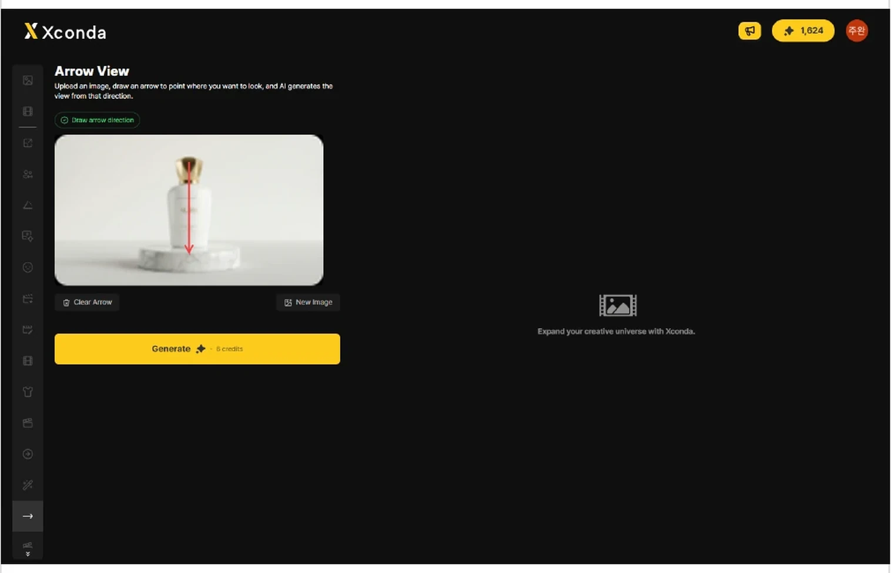
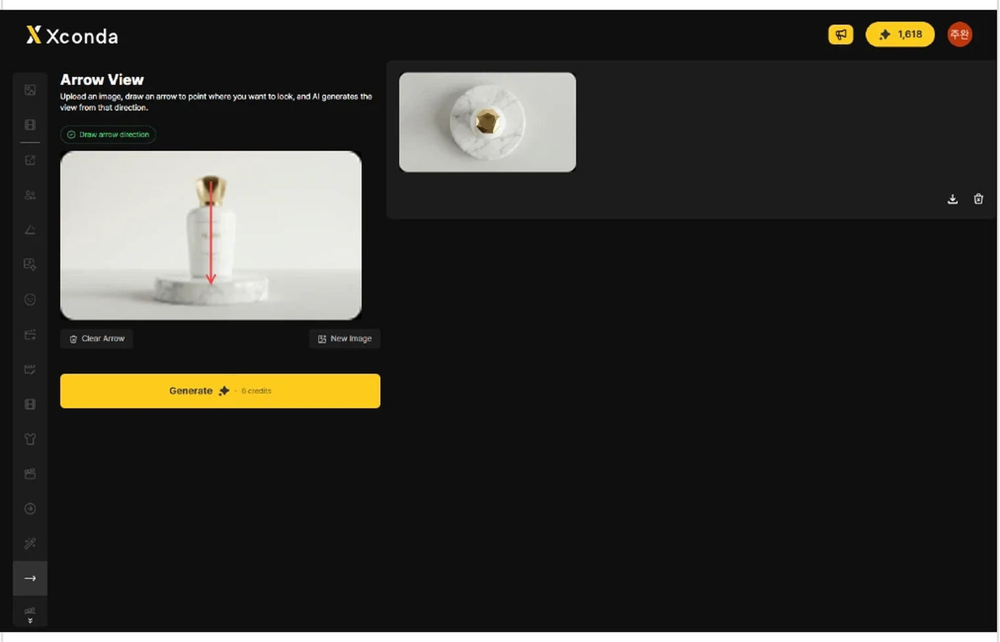

하나의 이미지에서 다양한 카메라 앵글의 뷰를 생성하는 데 사용합니다. 이미지 위에 화살표를 그리면, AI가 해당 방향에서 바라본 시점을 생성합니다. 기존 방식은 3D 소프트웨어에서 카메라 앵글을 조정하거나 3D 공간 이해가 필요했습니다. Arrow View 방식은 이미지 위에 화살표 하나만 그으면 끝 — 3D 지식 없이 직관적으로 원하는 시점을 생성할 수 있습니다.

1. 제품 촬영 앵글 확장 — 정면 1장만 촬영한 제품을 탑뷰, 측면뷰, 45도 앵글 등으로 확장할 때. 2. 에어리얼 탑뷰 생성 — AI 이미지 생성의 약점인 항공뷰를 정확하게 뽑아야 할 때. 3. 스토리보드 앵글 다양화 — 동일한 씬을 다양한 카메라 앵글로 보여줘야 하는 스토리보드 작업 시. 4. 건축/인테리어 시점 변환 — 공간 이미지를 다른 시점에서 바라본 모습으로 변환할 때. 5. 광고 소재 변형 — 동일 이미지에서 배너·포스터·SNS용 컷을 다양화할 때.

화살표 기반 시점 지정 — 이미지 위에 화살표를 그려 원하는 카메라 방향을 직관적으로 지정합니다. 3D 지식이 없어도 사용할 수 있습니다. 다양한 앵글 생성 — 탑뷰(위에서 아래), 로우앵글(아래에서 위), 측면뷰, 대각선 등 자유로운 시점 변환이 가능합니다. 원본 톤 유지 — 원본 이미지의 색감·조명·질감을 유지한 채 시점만 변환합니다.
화살표 그리기: 시작점 → 끝점이 카메라 이동 방향입니다. 짧은 화살표 = 소폭 앵글 변화, 긴 화살표 = 대폭 앵글 변화. 화살표 방향이 명확할수록 결과가 정확합니다. 좋은 원본 이미지: 피사체가 명확하게 보이는 이미지, 배경이 단순한 이미지, 해상도가 높은 이미지. 결과가 부정확할 수 있는 경우: 원본에서 보이지 않는 영역이 많은 극단적 앵글 변환, 복잡한 배경이 포함된 이미지, 인물의 다른 측면이 보이지 않는 케이스.
왼쪽 세로형 사이드바에서 15번째 아이콘을 클릭합니다. 아이콘은 오른쪽 화살표 모양입니다. 클릭하면 Arrow View 작업 화면이 열립니다.
업로드 영역을 클릭하여 이미지를 선택합니다. 화면에는 Upload an image to get started 문구가 표시됩니다. 이미지를 업로드하면 편집 영역에 원본 이미지가 표시됩니다. 이미지가 누락되면 Generate 버튼이 활성화되지 않습니다.

이미지 위에서 마우스를 드래그하여 화살표를 그립니다. 화살표의 시작점에서 끝점 방향으로 시점이 지정됩니다. 화살표를 그리면 Draw arrow direction 상태가 표시되고 Generate 버튼이 활성화됩니다. 화살표가 누락되면 생성 버튼이 활성화되지 않습니다.
Clear Arrow — 현재 이미지 위에 그린 화살표를 지웁니다. New Image — 업로드한 이미지를 다른 이미지로 교체합니다. 화살표 방향을 다시 지정하려면 Clear Arrow를 클릭한 뒤 이미지 위에 새 화살표를 그립니다.

이미지 업로드와 화살표 그리기를 완료한 후 노란색 Generate 버튼을 클릭합니다. 클릭하면 결과 생성이 시작됩니다.

생성이 완료되면 오른쪽 결과 영역에 생성된 이미지가 표시됩니다. 왼쪽에는 화살표가 그려진 원본 이미지가 남아 있어 원본 방향 지정과 결과를 함께 확인할 수 있습니다.
결과가 원하는 방향과 다르면 Clear Arrow를 클릭합니다. 기존 화살표를 지운 뒤 새 방향으로 화살표를 다시 그립니다. 다른 원본 이미지로 작업하려면 New Image를 클릭합니다.
결과 이미지 오른쪽의 다운로드 아이콘을 클릭합니다. 클릭하면 생성된 결과 이미지를 다운로드할 수 있습니다. 결과 카드에는 삭제 아이콘도 함께 표시됩니다. 삭제 아이콘을 클릭하면 해당 결과를 제거할 수 있습니다.
